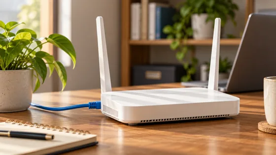

Comece pelas novidades
Use “Ver pendências” para localizar respostas e chamados não lidos. Abra um item para retomar o contexto.
ÁREA RESTRITA · PROXITI
Acesso à operação e ao acompanhamento dos atendimentos.
Acesso individual · Não compartilhe suas credenciais
CENTRAL TÉCNICA / ÁREA PRIVADA
Sua operação, seus atendimentos e recursos.
Nenhuma pendência por enquanto.
Sua conta ainda não foi autorizada pela administração.
PROXITI / SEU ESPAÇO DE TRABALHO
Verificando os dados da sua conta…
ORIENTAÇÃO RÁPIDA
Abra apenas o que for útil agora. Suas áreas disponíveis dependem das permissões da conta.
Use “Ver pendências” para localizar respostas e chamados não lidos. Abra um item para retomar o contexto.
Os cartões abaixo dão acesso às áreas autorizadas, como UniProxiti, Ferramentas e seu perfil.
Amplie a leitura quando precisar. O modo de foco reduz o que aparece na tela, sem modificar seus chamados.
CONTINUE DE ONDE PAROU
Retome o contexto do atendimento que você estava acompanhando.
PRIORIDADES VISÍVEIS
Indicadores de até 100 chamados mais recentes acessíveis à sua conta. Atualização automática quando conectada.
ATENDIMENTOS
Seus chamados aparecerão aqui quando a fila estiver disponível.
SEUS RECURSOS
Fila, mensagens e histórico.
Abrir chamados →Retornos, visitas e horários combinados.
Ver compromissos →Materiais técnicos autorizados.
Ver materiais →Equipamentos e atribuições.
Ver ferramentas →Nome, foto e segurança.
Editar perfil →Os recursos aparecem conforme as permissões autorizadas pela administração.
PROXITI · CENTRAL DE OPERAÇÕES
Prioridades, responsáveis e histórico dos atendimentos.
PROXITI · CENTRAL TÉCNICA
Atendimentos, conversas e histórico em um único lugar.
Acompanhe cada etapa. Solicitações sem responsável ficam disponíveis aos técnicos autorizados.
Consultando a fila autorizada…
Carregando chamados…
O histórico, as mensagens e as ações do chamado aparecerão aqui, sem sair da caixa de entrada.
A conversa será carregada ao abrir o chamado.
PROXITI · CENTRAL TÉCNICA
Convites e permissões da equipe técnica autorizada.
Convites e mudanças de permissões exigem verificação em duas etapas para administradores. Ative-a em Meu perfil antes de cadastrar a equipe.
Novos convidados começam com acesso pendente. A liberação e as permissões são definidas individualmente pelo administrador.
PROXITI · CENTRAL TÉCNICA
Textos publicados com revisão e histórico.
Edite os textos ligados ao site pelo identificador. A exclusão remove a personalização e restaura o texto estático do site. Arquivos-fonte, checkout e código continuam protegidos no GitHub.
PROXITI · CENTRAL TÉCNICA
Visitas, retornos e compromissos vinculados aos chamados.
Compromissos vinculados aos chamados acessíveis. Planejar não envia convite: confirme com o cliente antes de marcar o horário.
Consultando sua agenda autorizada…
Carregando sua agenda…
CONHECIMENTO PARA A PRÁTICA
Programa interno de capacitação PROXITI

PERCURSOS DISPONÍVEIS
Trilhas essenciais e recomendadas. Cada uma libera seu certificado após as duas aulas e a prova final, sem exigir todo o currículo.
RETOME SEU PERCURSO
Os dados da aula são carregados da sua conta.
REGISTROS DA SUA CONTA
CERTIFICAÇÃO EMITIDA
Seus certificados emitidos e registrados no servidor.
Certificação interna, não credencial formal.Consultando seu progresso individual…
Cada trilha é independente e tem duas aulas (50 minutos cada, incluindo atividade prática) e uma prova final (20 minutos), com cerca de 2 horas de estudo orientado. Para concluir cada aula, acerte pelo menos 3 de 4 questões (75%). Após aprovar as duas aulas da trilha, faça sua prova final de 10 questões: mínimo de 80 pontos na prova, média ponderada mínima de 80 e acerto de eventuais questões críticas. A média considera 60% da melhor nota de cada aula e 40% da prova final. Seu certificado interno da trilha é emitido pelo servidor quando todos esses critérios forem cumpridos. Não é necessário concluir as outras trilhas. A antiga certificação geral de 16 aulas continua disponível como opção adicional, sem substituir os certificados individuais.
As perguntas serão carregadas com seu curso.
Dez questões sobre as duas aulas desta trilha. Sua nota e o certificado são verificados e registrados no servidor, sem exigir a conclusão das outras trilhas.
24 questões objetivas distribuídas entre as oito áreas. A prova é individual e corrigida no Supabase. Quatro questões críticas de segurança e privacidade exigem acerto; você pode refazer após estudar.
PROXITI · CENTRAL TÉCNICA
Procedimentos versionados, pesquisa e arquivos privados.
Procedimentos internos e arquivos privados para consulta rápida, com revisão e histórico editorial.
Consultando a biblioteca autorizada…
Publicação, revisão e histórico da biblioteca técnica.
PROXITI · CENTRAL TÉCNICA
Utilitários digitais locais para diagnósticos seguros.

PROXITI · CENTRAL TÉCNICA
Inventário autorizado de ferramentas e equipamentos atribuídos.
Inventário da PROXITI. Equipamentos de clientes permanecem vinculados a seus chamados.
PROXITI · CENTRAL TÉCNICA
Contatos dos chamados que sua conta está autorizada a consultar.
Consultando chamados autorizados…
PROXITI · CENTRAL TÉCNICA
Indicadores reais dos chamados acessíveis à sua conta.
Consultando indicadores…
Resumo dos até 100 chamados recentes acessíveis à sua conta; não representa o histórico integral da PROXITI.
PROXITI · CENTRAL TÉCNICA
Contas cadastradas e situação de acesso à Central.
Consultando contas…
PROXITI · CENTRAL TÉCNICA
Preferências locais, notificações e segurança da conta.
Alterne entre os temas claro e escuro.
O som de novos chamados fica habilitado. O navegador pode exigir uma interação para liberar áudio.
Gerencie sua senha e verificação em duas etapas.
Encerre a sessão ao terminar seu trabalho.
PROXITI · CENTRAL TÉCNICA
Identidade, preferências e segurança da sua conta.
CONTA E IDENTIDADE
Controle sua identificação no painel e proteja suas credenciais.
Consultando sua proteção adicional…
Use um aplicativo autenticador para proteger sua conta. Depois de ativar, o código será exigido no próximo login. Guarde um segundo fator de recuperação em outro dispositivo.
Se não puder ler o QR Code, digite esta chave no aplicativo: